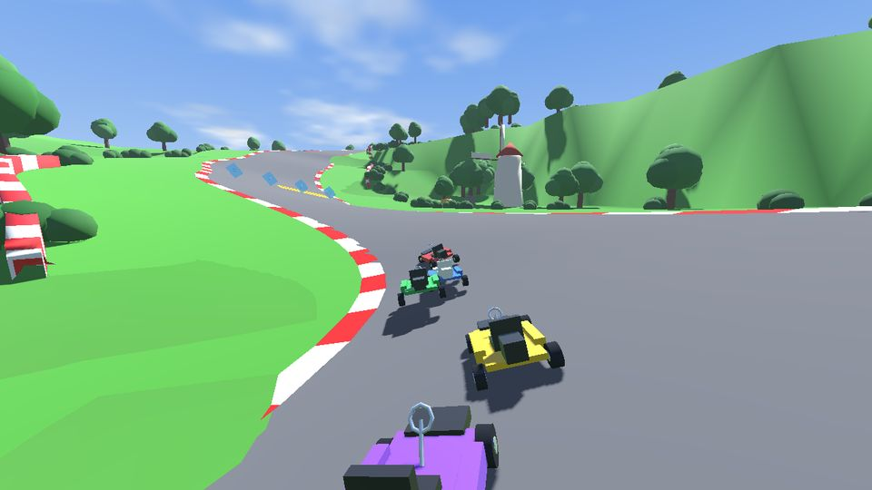
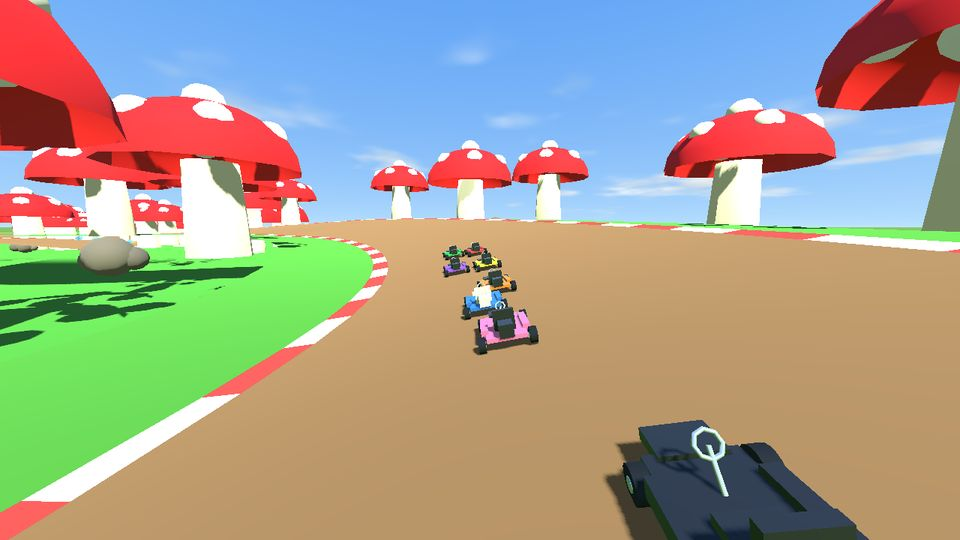
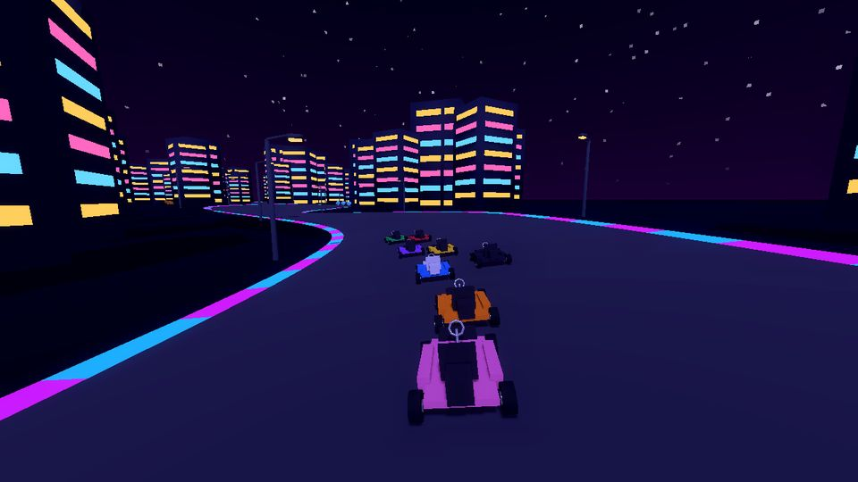
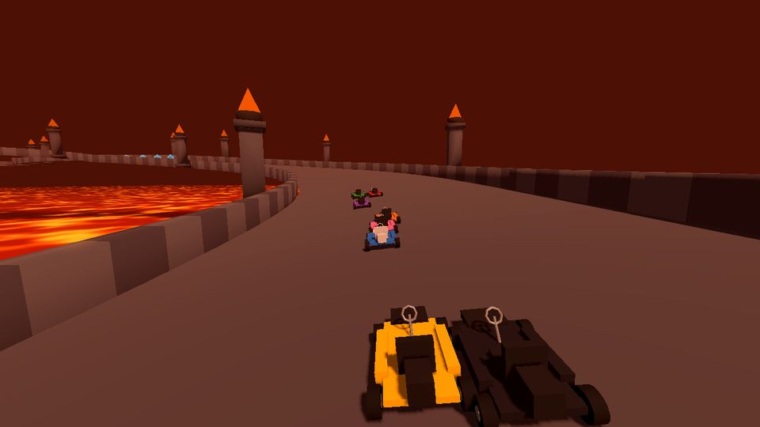
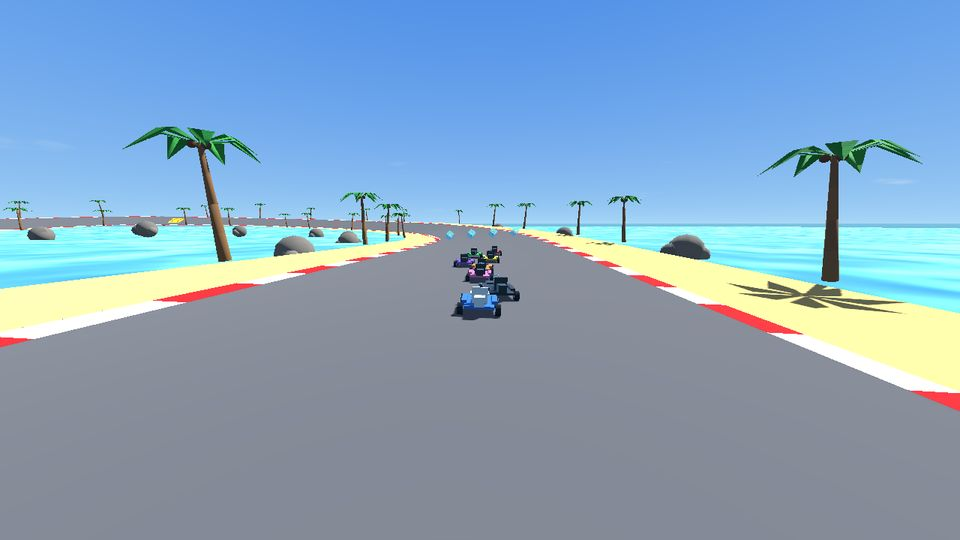
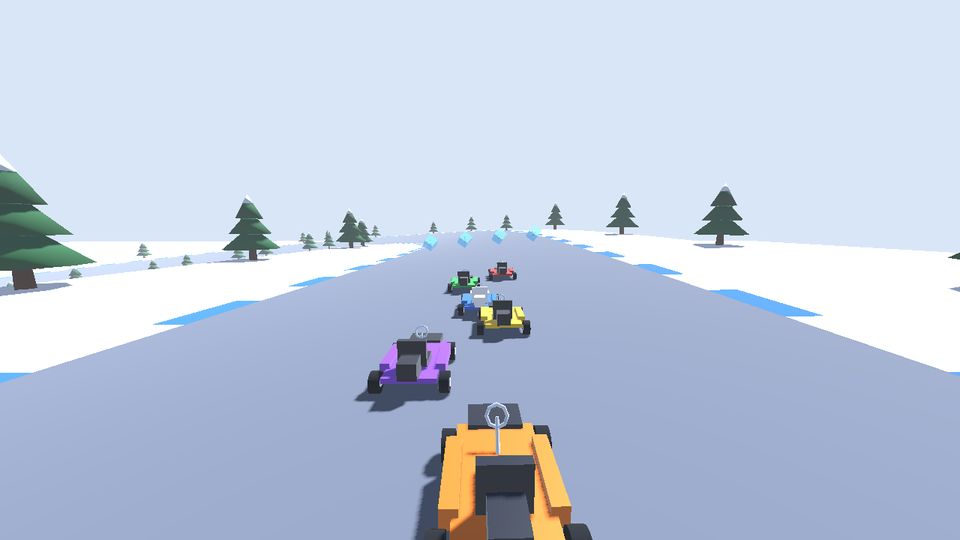

Télécharger
Version {{VERSION}} · publiée le {{DATE}}
Windows
64 bits · archive ZIP · {{TAILLE_WINDOWS}}
Télécharger
Android
arm64 · APK · {{TAILLE_ANDROID}}
Télécharger
Installer sur Windows
- Décompresser l'archive, où l'on veut.
- Lancer
SuperKart.exe: il doit rester à côté deSuperKart.pck. - Windows peut prévenir que l'application n'est pas reconnue : Informations complémentaires, puis Exécuter quand même.
Installer sur Android
- Ouvrir le fichier
SuperKart.apktéléchargé. - Autoriser l'installation d'applications depuis le navigateur, si le téléphone le demande.
- Une nouvelle version s'installe par-dessus l'ancienne, sans perdre la progression.






Au programme
- Grand Prix — deux coupes de quatre circuits, et leurs trophées.
- Contre-la-montre — contre son propre fantôme.
- Bataille — trois ballons chacun, le dernier en lice gagne.
- Multijoueur — en réseau local, ou par Internet.
- Cinq karts — de la Plume au Costaud, à la couleur de son choix.
- 50 à 200cc — et le mode miroir, à débloquer.
- Dérapages et mini-turbos, figures sur les sauts, objets à lancer.
- Clavier, manette ou écran tactile.